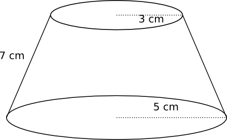
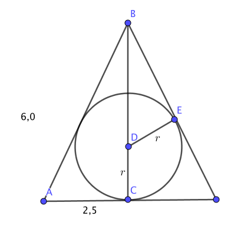

17. Konen
Volymen för konen är \( V=\dfrac{1}{3}A_bh \).

Mantelytan för en rak kon är \( A=\pi rs \).

Exempel 1 Hur mycket voffla går det åt att göra en glasstrut som är 15 cm hög och vars öppning är 7,0 cm?
Lösning
Via Pythagoras kommer vi åt längden av sidan, \( s=\sqrt{15^2+3,5^2} = 15,4 \) cm.

Mantelytan är \( A=\pi rs=\pi 3,5 \cdot 15,4 = 169,3 \textrm{ cm}^2 \approx 170 \textrm{ cm}^2 \).
Exempel 2 Bestäm vinkeln mellan sidan och diagonalen för en kon vars volym är 60 cm3 och diametern är 5 cm.
Lösning
Vi kommer åt höjden via volymen för konen. Volymen, \( V=\dfrac{1}{3}A_bh \) som betyder att \( h= \dfrac{3V}{A_b} \). \( A_b = \pi r^2 \) så vi får \( h= \dfrac{3V}{\pi r^2} = \dfrac{3 \cdot60}{\pi 2,5^2} = \dfrac{28,8}{\pi} (\approx 9,17) \) .

Då vi vet höjden bestämmer vi vinkeln med hjälp av \( \tan \)
, \( \tan \alpha = \dfrac{h}{r} = \dfrac{\dfrac{28,8}{\pi}}{2,5} \) ger \( \alpha = 74,759^{\circ} \). Alltså \( 74,8^{\circ} \).
Då vi tar bort toppen av en kon får vi en stympad kon. Volymen för en stympad kon är \( \dfrac{h \cdot \pi}{3}(R^2+Rr+r^2) \) och mantelarean är \( \pi s(R+r) \).

Exempel 3 Bestäm volymen och mantelarean för den stympade konen i bilden. Hur hög var konen ursprungligen?

Lösning
Vi börjar med att räkna fram höjden för den stympade konen. Höjden får vi via Pythagoras sats.

\( \begin{array}{rl} h^2 =& 7^2-2^2 \\ h=& 3\sqrt{5} \\ \\ V = & \dfrac{\pi h}{3} (R^2 + Rr + r^2) = \dfrac{\pi 3\sqrt{5}}{3}(5^2 + 5\cdot 3 +3^2) = 344 \textrm{ cm}^3 \approx 340 \textrm{ cm}^3\\ \\ A = & \pi s(R+r) = \pi 7(5+3)= 175,9 \textrm{ cm}^2 \approx 180 \textrm{ cm}^2\\ \end{array} \)
Efter det fortsätter vi att söka den ursprungliga höjden.

Likformigheten ger oss att \( \triangle ABC \sim \triangle ADE \). Och vi kan bilda förhållandet
\( \begin{array}{rl} \dfrac{AD}{AB}=&\dfrac{DE}{BC} \\ \\ \dfrac{x}{x+3\sqrt{5}}=&\dfrac{3}{5} \\ \\ 5x = & 3x+9\sqrt{5} \\ 2x = & 9\sqrt{5} \\ x=& \dfrac{9\sqrt{5}}{2}\\ \end{array} \)
Ursprunglig höjd är \( \dfrac{9\sqrt{5}}{2} + 3\sqrt{5} = \dfrac{15\sqrt{5}}{2} \).
Uppgifter
- Radien för en kons bottenyta är 3,5 cm och konen är 7,0 cm hög. Bestäm volymen och mantelytan för konen.
\( V = \dfrac{1}{3}A_b \cdot h = \dfrac{1}{3}\pi r^2 \cdot h = \dfrac{1}{3}\pi 3,5^2 \cdot 7 = 89,797\ldots \approx 90 \) cm3.
Arean för mantelytan är \( A_m = \pi r s \).
Sidan för konen får vi via Pythagoras, \( s^2=7^2+3,5^2 \Leftrightarrow s =\sqrt{7^2 +3,5^2} \).
Arean är \( A_m = \pi \cdot 3,5 \cdot \sqrt{7^2 +3,5^2} = 86,053\ldots = 86,1 \) cm2.
- En hur stor vinkel bildar sidan för en rak kon med bottenarean då höjden för konen är 8,0 cm och volymen är 0,5 liter. Svar med en tiondel grads noggrannhet.
0,5 liter = 500 cm3. Volymen ger oss att \( V=\dfrac{1}{3}\pi r^2 \cdot h \Leftrightarrow 500 = \dfrac{1}{3} \pi r^2 \cdot 8 \) ger oss \( r=\pm 7,7254\ldots \) cm.
Vinkeln mellan höjden och radien får vi via tangens, \( \tan \alpha = \dfrac{8}{7,7254\ldots} \) som ger \( \alpha = 46,00\ldots \).
Vinkeln är 46,0o.
- En kulle eller ett berg kan ses som en stympad kon. Bestäm den totala volymen på en valfri kulle som är nära där du bor genom Forsstryrelsens karttjänst, http://www.retkikartta.fi.
Börja med att välja en lämplig plats. Sedan skall du värdera hur många meter som kullen blir högre. Här jobbar vi med kullen vid Alpbyn i Helsingfors.

Behöver du repetera karttecken så se www.retkikartta.fi/Merkkien_selitys.pdf.
Vid 1. ser vi att vi är 20 meter över havsytan. Vid 2. har vi motsvarande beteckning. Eftersom hjälpledkurnan, de smala bruna är 5 m, är 2. på 40 meter över havet. 3. Ger oss ett avstånd, eller så kan vi använda oss av mätverktyget.
Vi bestämmer volymen för kullen i det blåa området.
Höjden är ca 10 m, bottenarean är ungefär en cirkel med radien R = 100 m, och topparean är ungefär en cirkel med radien r= 50 m.
Vi får \( \dfrac{h\pi h}{3}(R^2+Rr+r^2) = \dfrac{10\pi}{3}(100^2+100\cdot 50+50^2) = 136135,68 \). Alltså ca 140 000 m2.
- Bestäm höjden för den kon som är 3 gånger så hög som bred och vars volym är 0,8 l.
Eftersom konen är 3 gånger högre än bred så är höjden 6 gånger radien. Vi har \( h=6r \).
Volymen är 0,8 l = 0,8 dm3.
Vi får
\( \begin{array}{rcll} V &=& \dfrac{1}{3}Ah \\ &=& \dfrac{1}{3}\pi r^2 h &\mid h=6r\\ &=& \dfrac{1}{3}6\pi r^3 \\ &=& 2\pi r^3 \\ 0,8 &=& 2\pi r^3 \\ r^3 &=& \dfrac{0,8}{2\pi} \\ r &=& \sqrt[3]{\dfrac{0,8}{2\pi}} \approx 0,50316\ldots \end{array} \)
Radien är alltså \( 0,50316\ldots \) dm, höjden är \( 6r=3,01898\ldots \) dm. Alltså 30 cm.
- En rät triangel vars kateter är 5,0 cm och 6,0 cm roterar kring den längre kateten. Bestäm matelytan av den kon som uppstår.
Vi får en kon vars höjd är 6 cm. Längden av sidan får vi via Pythagorsas, \( \sqrt{6^2 + 5^2} = \sqrt{61} \).
Mantelytan är \( A = \pi rs = \pi \cdot 5 \text{ cm} \cdot \sqrt{61} \text{ cm} = 122,68 \text{ cm} \).
Alltså 122,7 cm2 eller 123 cm2
Bestäm volymen av kroppen i bilden.

Höjden får vi via Pythargoras. \( h^2 + (6,0 - 2,5)^2 = 5^2 \) ger \( h=3,57 \) cm.
Volymen, \( V= \dfrac{h \cdot \pi}{3}(R^2+Rr+r^2) = \dfrac{3,57 \cdot \pi}{3}(2,5^2+2,5 \cdot 6,0+6,0^2) = 214,028\ldots \)
Volymen är 214 cm3.
- Största möjliga boll skrivs in i en kon vars höjd är 6 och radie för bottenytan 2,5. Bestäm radien på bollen.
Som genomskärning ser det ut som. OBS! höjden är 6.

Vi bildar förhållandet \( \dfrac{DE}{AC} = \dfrac{DB}{AB} \).
Vi får AB som \( \sqrt{2,5^2 + 6^2} = 6,5 \).
Vi har
\( \begin{array}{rcl} \dfrac{r}{2,5} & = & \dfrac{6-r}{6,5} \\ 6,5 r & = & 2,5(6-r) \\ 6,5 r & = & 15 -2,5r \\ 9 r & = & 15 \\ r & = & \dfrac{15}{9} = \dfrac{5}{3} \\ \end{array} \)
Alltså \(r = \dfrac{5}{3} \).
- Bestäm förhållandet mellan deras totala areor.
Eftersom förhållandet mellan motsvarande sidor är \( \dfrac{\frac{5}{3}}{2,5} \) är förhållandet mellan deras areor \( (\dfrac{\frac{5}{3}}{2,5})^2 = \dfrac{4}{9} \) .
- Bestäm förhållandet mellan deras volymer.
Eftersom förhållandet mellan motsvarande sidor är \( \dfrac{\frac{5}{3}}{2,5} \) är förhållandet mellan deras volymer \( (\dfrac{\frac{5}{3}}{2,5})^3 = \dfrac{8}{27} \) .
- Bestäm förhållandet mellan deras totala areor.
- En kon skrivs in i en tetraeder. Hur många procent utgör konens volym av tetraederns volym? Svar med en tiondel procents noggrannhet.
Tetraederns volym är \( V = \dfrac{\sqrt{2}}{12} s^3 \) eller \( V = \dfrac{1}{3}A_b h \) och konens volym är \( \dfrac{1}{3} h \pi r^2 \).
Höjden för tetraedern och konen är samma. Vi måste bilda ett samband mellan tetraederns sida och konens radie. Uppifrån förhåller sig konens bottenyta och tetraederns bottenyta som

Vi bildar förhållandet \( \dfrac{EG}{DC} = \dfrac{GA}{AD} \), alltså \( \dfrac{r}{\frac{a}{2}} = \dfrac{\frac{a}{2}}{\sqrt{a^2 -(\frac{a}{2})^2}} \).
Då vi löser \( r = \) får vi
\( \begin{array}{rcl} r & = & \dfrac{\frac{a^2}{4}}{\sqrt{a^2 -(\frac{a}{2})^2}} \\ & = & \dfrac{\frac{a^2}{4}}{\sqrt{a^2 -\frac{a^2}{4}}} = \dfrac{\frac{a^2}{4}}{\sqrt{\frac{3a^2}{4}}} \\ & = & \dfrac{\frac{a^2}{4}}{\frac{a}{2}\sqrt{3}} = \dfrac{a^2}{4} \cdot \dfrac{2}{a\sqrt{3}} = \dfrac{a}{2\sqrt{3}} \\ \end{array} \)
Förhållandet mellan volymerna är
\( \begin{array}{rcl} \dfrac{V_k}{V_T} & = & \dfrac{\frac{1}{3} h \pi r^2}{\frac{1}{3}A_b h } \\ & = & \dfrac{\pi r^2}{A_b} = \dfrac{\pi r^2}{\frac{1}{2}ab\sin \alpha} \\ & = & \dfrac{\pi (\frac{a}{2\sqrt{3}})^2}{\frac{1}{2}a^2\sin 60^{\circ}} \\ & = & \dfrac{\pi (\frac{a}{2\sqrt{3}})^2}{\frac{1}{2}a^2\sin 60^{\circ}} \\ & = & \dfrac{\frac{\pi \cdot a^2}{4 \cdot 3}}{\frac{1}{2}a^2\sin 60^{\circ}} \\ & = & \dfrac{\pi \cdot a^2}{12} \cdot \dfrac{2}{a^2 \sin 60^{\circ}} = 0,60459\ldots \\ \end{array} \)
Alltså 60,5 %.